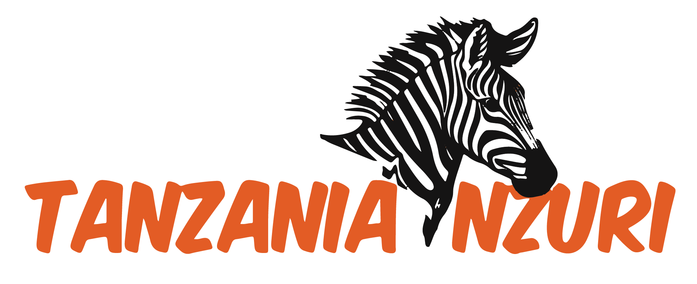

Tanzania Nzuri already owns a zebra. All six keep it — as the animal, as the pattern, or as rhythm — but rebuilt so the mark survives where the current one cannot: a 16px favicon, a WhatsApp avatar, a stamp on a vehicle door, one colour on a permit. Each is one flat drawing, colours as literals inside the SVG, shown on bone and, as a ground test, on night — the site itself ships light only.

The drawing is an engraving. Sixty-odd separate stripes, hairline gaps — below about 64px it fills in and becomes a black blob.
The type sits on top of the animal. The zebra's jaw crosses the N of NZURI, so neither can be resized without the other breaking.
The colour is the category default. Safari orange on white is what most operators in Arusha already use — it cannot carry a differentiated brand.
There is no small form. No tile, no monogram, nothing to put on an avatar.
Kilimanjaro, drawn as zebra stripes
The mountain is the one silhouette every traveller already knows, and the stripes make it theirs. Says safari and summit in one shape, and survives at 16px.
It keeps the zebra as pattern, not as animal — a client who loves the zebra head may feel it was dropped.
The zebra head, rebuilt from straight geometry
Closest to the equity they already own: still the head, but drawn in six lines instead of sixty, so it holds at a favicon size. The eye is the accent.
Any zebra head is a crowded field in East African tourism; the drawing has to stay ruthlessly simple or it drifts back to the old one.
The park badge — the head in a stamp
Reads as a national-park sign or a passport stamp: authority, place, arrival. Pairs naturally with direction A (Kibao).
Badges are the most common logo shape in travel; it is the least distinctive of the six at a glance.
The N of Nzuri as three zebra bars
A monogram that is also a stripe pattern: the tightest app icon of the six, and the only one that carries the NAME at 16px.
Abstract — without the wordmark beside it, nothing says Tanzania or zebra.
First light, with stripes for rays
Warm, human and immediately "beautiful Tanzania" — nzuri means beautiful. The only mark of the six that is not dark-led.
Sunrise marks are everywhere in safari branding; it leans on colour to stay distinct.
The way — stripes bending into a path
Draws the promise rather than the animal: "Tanzania, your way", a journey that climbs. Distinctive and ownable.
The most abstract; it needs the wordmark to explain it, and the zebra survives only as rhythm.
2 — Kichwa for the mark, with 4 — N as the tile. Kichwa keeps the equity the client already paid for and is the one drawing that still reads as their zebra at 16px; N gives them the square avatar the current logo has never had, and the two share one geometry. If the ruling is direction A (Kibao), 3 — Alama is the better mark: the badge belongs on a signboard. NEEDS RULING
Whatever wins, the wordmark is set in the chosen direction's display face — Archivo above — never the current brush script, and the zebra never overlaps the letters again.